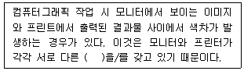
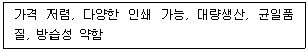

시각디자인산업기사 (2020-06-06 기출문제)
1과목: 색채학
1. 안전색채를 선택하는데 있어서 고려해야 할 사항이 아닌 것은?
- 색채로서 직감적인 연상을 일으킬 수 있어야 한다.
- 푸르킨예 현상을 고려해야 한다.
- 용도에 따른 색채의 선정이 적절해야 한다.
- 색채를 사용한 관습과는 관계가 없다.
(정답률: 92%)

2. 다음 중 명시도가 가장 높은 색의 조합은?
- 빨강 + 보라
- 검정 + 노랑
- 보라 + 파랑
- 노랑 + 연두
(정답률: 89%)
3. 먼셀 색체계에서 빨강의 보색은?
- 노랑
- 주황
- 청록
- 보라
(정답률: 93%)
4. 먼셀(Munsell) 색상환에서 색상 간의 거리가 가장 가까운 것은?
- Red - Yellow
- Yellow - Purple
- Blue – Red Purple
- Green Yellow – Purple Blue
(정답률: 83%)
5. 우리 눈의 시세포 중에서 색의 지각이 아닌 흑색, 회색, 배색의 명암만을 판단하는 시세포는?
- 추상체
- 간상체
- 수평세포
- 양극세포
(정답률: 76%)
6. 문·스펜서의 색채조화론에서 기준색이 R인 경우 유사조화에 해당되는 색상은?
- YR
- P
- B
- G
(정답률: 91%)
7. 문·스펜서가 1944년 미국의 광학잡지(JOSA)DP 발표한 색채조화 논문과 관련이 없는 내용은?
- 고전적인 색채조화론의 기하학적 공식화
- 색채조화의 면적의 문제
- 색채조화의 채도
- 색채조화에 적용되는 미도
(정답률: 43%)
8. 다음 ( )에 적용한 용어는?

- 팔레트
- 색채
- 표준색
- 색역
(정답률: 72%)
9. 흰 종이 위에 흑색 글씨가 황색 글씨보다 훨씬 눈에 잘 보이는 것과 관련 있는 것은?
- 수축성
- 기호성
- 명시성
- 항상성
(정답률: 93%)
10. 색의 감지에 관한 푸르킨예 현상을 적용한 비상구 표시로 적합한 색은?
- 노랑
- 빨강
- 주황
- 초록
(정답률: 94%)
11. 색채를 적용할 대상을 검토할 때, 고려해야 할 조건으로 옳지 않은 것은?
- 면적효과 – 대상이 차지하는 면적을 고려한다.
- 거리감 – 대상과 보는 사람과의 거리를 고려한다.
- 조명조건 – 자연광, 인광광의 구분 및 그 종류와 조도를 고려한다.
- 움직임 – 시야에 있는 시간의 장단을 고려한다.
(정답률: 85%)
12. 먼셀 표색계에 관한 설명으로 옳은 것은?
- 먼셀은 기준색상을 8가지로 구분하였다.
- 명도 구분은 1~11까지로 하였다.
- 먼셀 기호표시법은 H C/V로 한다.
- 색상환에서 180°로 마주보고 있는 두 색상을 서로 보색관계라고 한다.
(정답률: 70%)
13. 색채계획의 목적과 효과가 아닌 것은?
- 질서를 부여하고 통합한다.
- 심리적 안정을 방해한다.
- 공간의 요소를 쉽게 파악할 수 있도록 한다.
- 방향과 정보를 쉽게 알 수 있게 한다.
(정답률: 92%)
14. 헤링의 4원색에 해당되지 않는 색은?
- 황색
- 청색
- 적색
- 회색
(정답률: 90%)
15. 색의 3속성에 관한 설명으로 옳은 것은?
- 명도는 빨강, 노랑, 파랑 등과 같은 색감을 말한다.
- 채도는 색의 맑고 탁함이나 순수한 정도, 포화도를 말한다.
- 채도는 빨강, 노랑, 파랑 등과 같은 색상의 밝기를 말한다.
- 명도는 빨강, 노랑, 파랑 등과 같은 색상의 선명함을 말한다.
(정답률: 85%)
16. 먼셀색체계의 색상에 대한 설명으로 틀린 것은?
- 먼셀의 색상은 Hue(H)로 표기한다.
- 2.5 간격으로 세분화하여 50색상환을 만들 수 있다.
- R, Y, G, B, P의 5가지 주요색상에 5가지 중간색을 추가하여 10색상환을 만들 수 있다.
- 9R은 5R에 비해 노란색 띤 빨강이다.
(정답률: 61%)
17. 색이름의 분류에 관한 설명으로 옳지 않은 것은?
- 실제색이 아닌 개인의 경험에 의한 개인적 상징색을 기억색이라고 한다.
- 고유색은 눈에 보이고, 일정한 광원 조건하에서 실측된 실제 측정색이라고 한다.
- 특정 색에서 오는 연상과 언어의 의미는 전달되지만, 감성적 형용사의 의미를 함께 전달할 수는 없다.
- 주관적이며 상징적인 의미를 가지며, 자연현상이나 일기의 변화에서 느껴지는 색을 현상색이라고 한다.
(정답률: 75%)
18. 현색계와 혼색계에 대한 설명으로 틀린 것은?
- 먼셀 색체계는 대표적인 현색계이다.
- CIE 색체계는 대표적인 혼색계이다.
- 현색계는 물체색을 색의 3속성에 따라 분류한다.
- 혼색계는 표준 색표집으로 제작되어 있다.
(정답률: 62%)
19. 빛의 파장에 있어서 스펙트럼 전반에 걸쳐 비교적 고른 반사율을 가지고 있는 색은?
- 빨강
- 파랑
- 보라
- 회색
(정답률: 61%)
20. 배색방법에 있어 주조색, 보조색, 강조색의 특징에 대한 설명으로 틀린 것은?
- 주조색은 전체의 70% 이상을 차지하는 색을 말한다.
- 보조색은 주조색 다음으로 넓은 공간을 차지하는 색을 말한다.
- 디자인 분야별로 주조색의 선정방법은 언제나 동일하다.
- 강조색은 대상에 악센트(accent)를 주어 신선한 느낌을 만드는 포인트 역할을 한다.
(정답률: 96%)
2과목: 인쇄 및 사진기법
21. 제책 공정 중 속장과 겉장을 연결하는 것으로 책의 내구력을 증가시키는 공정은?
- 접지(folding)
- 고르기(pressing)
- 쪽 맞추기(gathering)
- 면지 붙이기(end paper)
(정답률: 67%)
22. 사진 제판법을 바탕으로 하는 오목판 인쇄 방식으로 다색 인쇄물일 때는 색채가 매우 풍부하지만 다른 인쇄 방식보다 강한 인쇄 압력이 필요한 것은?
- 오프셋 인쇄
- 플렉소 인쇄
- 스크린 인쇄
- 그라비어 인쇄
(정답률: 61%)
23. 다음 중 유기안료는?
- 감청
- 카본블랙
- 티탄화이트
- 리솔(lithol)레드
(정답률: 57%)
24. 밀착용 명실필름의 최대 분광감도의 파장영역(nm)은?
- 320 ~ 350
- 420 ~ 450
- 520 ~ 550
- 620 ~ 650
(정답률: 37%)
25. 상질지 또는 중질지에 도료를 입혀서 슈퍼 캘린더로 광택을 내며, 평활성이 좋아 오프셋 인쇄의 고급 인쇄물로 책표지, 카탈로그, 포스터 등과 같이 그 용도가 광범위하게 사용되는 인쇄용지는?
- 모조지
- 아트지
- 버라이터지
- 아이보리지
(정답률: 86%)
26. 다음 할로겐화은(AgX) 중 사진 감광재료로 사용되지 않는 것은?
- 요오드화은(AgI)
- 브롬화은(AgBr)
- 플루오르화은(AgF)
- 염화은(AgCI)
(정답률: 54%)
27. 다음 중 풍경사진이나 원거리 피사체 촬영에 적합한 노출계는?
- 입사식 노출계
- 반사식 노출계
- 투과식 노출계
- 흡수식 노출계
(정답률: 44%)
28. 카메라에 사용하는 필름의 대각선 길이와 거의 같은 초점 거리를 갖는 렌즈는?
- 망원렌즈
- 표준렌즈
- 플어안렌즈
- 광각렌즈
(정답률: 75%)
29. 스크린 인쇄방법의 특징으로 옳지 않은 것은?
- 종이 외의 피인쇄체에 인쇄할 수 있다.
- 잉크 피막 두께가 기타 인쇄방법에 비해 두껍다.
- 판면의 높이가 같고 물과 잉크의 반발력을 이용하여 인쇄한다.
- 잉크의 피복력이 크며, 퇴색, 변색이 기타 인쇄방법에 비해 느리게 진행된다.
(정답률: 56%)
30. 필름을 롤필름, 컷트필름, 필름 팩으로 구분할 때, 롤 필름(roll film)의 장점이 아닌 것은?
- 휴대하기 편리하다.
- 연속 촬영이 가능하다.
- 햇빛 아래에서 카메라에 바꿔 넣을 수 있다.
- 촬영 도중 다른 필름으로 바꿔 쓸 수 있으며 현장에서 바로 현상할 수 있다.
(정답률: 69%)
31. 반투명의 얇은 종이로 내유성과 내수성이 좋아, 버터, 치즈 등의 포장 용지로 사용하는 것은?
- 모조지
- 황산지
- 금속지
- 무산지
(정답률: 58%)
32. 적정 노광의 조리개 수치와 셔터 스피드가 f/11, 1/125일 때, 이와 같은 광량을 나타내는 조합으로 틀린 것은?
- f/8, 1/250
- f/5.6, 1/500
- f/4, 1/500
- f/16, 1/60
(정답률: 44%)
33. 인화가 계속되는 동안 인화지를 빛에 노출시켜 가장 밝은 부분과 그림자 부분 사이에 후광과 같은 효과를 얻는 인화방법은?
- 합성
- 에칭
- 포토그램
- 사바티에
(정답률: 53%)
34. 컬러 필름의 지지체 위에 구성된 다층 유제의 3가지 감광층은?
- 청색(B), 녹색(G), 적색(R)
- 적색(R), 시안(C), 청색(B)
- 적색(R), 녹색(G), 시안(C)
- 마젠타(M), 흑색(Bk), 황색(Y)
(정답률: 67%)
35. 어떤 물질의 경계면에 빛이 입사할 때 그 단색광 성분의 진동수는 변하지 않고 빛이 다시 되돌아오는 현상은?
- 반사
- 투과
- 굴절
- 흡수
(정답률: 89%)
36. 사진 현상에서 높은 콘트라스트와 경조의 상(image)을 만드는 현상주약은?
- 메톨(metol)
- 페니돈(phenidone)
- 히드로퀴논(hydroquinone)
- 벤조트리아졸(benzotriazole)
(정답률: 50%)
37. 활자 서체로서 가로, 세로의 넓이가 같고 각을 이룬 문자이며 강한 느낌을 주어 특별히 강조하거나 돋보이게 하기 위하여 사용하는 것은?
- 명조체
- 송조체
- 고딕체
- 궁서체
(정답률: 85%)
38. 가압방식에 따른 인쇄기의 3형식 중 고속인쇄에 가장 적합한 것은?
- 평압식
- 원압식
- 윤전식
- 직접식
(정답률: 64%)
39. 인쇄 전 인쇄판을 만드는 공정은?
- 제판
- 활판
- 원판
- 망판
(정답률: 73%)
40. 컬러 네거티브 필름을 구성하는 유제층 속에 청색광이 다음 유제층에 영향을 주지 못하도록 처리한 층은?
- blue 감광층
- green 감광층
- yellow 필터층
- 헐레이션 방지층
(정답률: 50%)
3과목: 시각디자인론
41. 모든 조형 예술의 최초의 요소로, 그래픽의 원천적인 요소가 되는 것은?
- 선
- 면
- 점
- 형태
(정답률: 81%)
42. 디자인 매니지먼트의 설명으로 틀린 것은?
- 경영 과학의 한 분야로 1980년대 일본에서부터 시작되었다.
- 시장조사, 아이디어 전개, 프레젠테이션 등을 관리한다.
- 디자인의 전개과정 전반을 계획하고 필요한 인원을 충당한다.
- 디자이너들이 자발적으로 창의력을 발휘하도록 지휘하고 수행여부를 측정, 분석한다.
(정답률: 67%)
43. 1점 투시에 대한 설명 중 적합하지 않은 것은?
- 인테리어 공간이나 건축설계에서 보편적으로 쓰인다.
- 바닥면보다는 천장면을 상세하게 표현하는데 효과적이다.
- 한 쌍의 평행면들은 화면과 평행인 상태로 남아있고, 다른 한 쌍의 평행면들은 소점을 향하여 좁아지며 나타난다.
- 물체에서 나오는 모든 선들이 하나의 소점으로 모인다.
(정답률: 65%)
44. 구매동기, 경쟁상품의 품질비교, 디자인에 대한 문제점, 디자인 개선에 대한 요구사항이 조사되는 디자인 관리의 요소는?
- 새로운 재료, 부품의 조사
- 소비자 여론조사
- 상품의 유통과정에 대한 조사
- 출판물에 대한 조사
(정답률: 85%)
45. 1920년대 중반부터 새로운 국제적인 디자인 운동이 형성되기 시작한 모더니즘에 대한 설명으로 틀린 것은?
- 꾸밈과 장식을 거부했으며, 기하학적인 형태의 선호가 높아 간결성, 명쾌성, 질서의 가치를 인정하였다.
- 근대화의 진전으로 과거의 것, 전통적인 것에 대한 타파를 주장하여 새롭고 독창적인 것을 우선하였다.
- 새로운 시대의 기계와 기술이 탄생한 토양 위에 전통적인 양식과 형태를 접목시키고자 노력하였다.
- 건축가, 디자이너들은 미래의 예술이 제작될 것이라고 믿고 인간의 행동을 개선할 새로운 세계의 창조를 기대하였다.
(정답률: 59%)
46. 디자인 조형요소 중 시각요소가 아닌 것은?
- 형과 형태
- 시간
- 질감
- 색채
(정답률: 82%)
47. 장애의 유무와 관계없이 누구에게나 보다 편리한 것, 사용에 있어서 차별이 없는 것을 디자인하는 것을 말하며 '모든 사람을 위한 디자인'이라고 일컫는 분야는?
- 유니버설 디자인
- 지속가능한 디자인
- 서비스 디자인
- 사용자 경험 디자인
(정답률: 82%)
48. 2차 대전 후 자원과 공업력으로 전 산업분야에서 지도적 입장을 갖게 된 미국은 건축, 공업디자인을 중심으로 디자인을 활성화 시켰으며, 세계적으로 제품, 생활양식까지도 영향을 주었다. 이와 관련된 것은?
- 히피 사조
- 아르누보
- 국제주의 양식
- 옵티컬 아트
(정답률: 55%)
49. 세계 시장과의 자유 경쟁 시대를 맞이한 국내 디자인계의 대응책으로 적합하지 않은 것은?
- 세계의 각 지역문화들을 이해하고 사용실태의 철저한 조사, 분석을 토대로 제품개발에 임해야 한다.
- 세계화된 공통언어의 디자인을 개발해야 한다.
- 한국형 상품의 지속적인 개발만이 유일한 대응 방안이다.
- 마케팅의 다원론적인 접근 방법과 기술연구개발에 공동 대처해야 한다.
(정답률: 87%)
50. 미술공예운동에 관한 설명으로 틀린 것은?
- 수공예의 혁신을 목표로 한 운동이다.
- 중세, 고딕, 길드의 창조적 노동의 기쁨을 강조하였다.
- 기계생산품의 미적규격화, 기계 생산에 적합한 형태를 찾는 운동이다.
- 아르누보, 데 스틸, 바우하우스 등에 영향을 준 운동이다.
(정답률: 72%)
51. 독일공작연맹(DWB)에서 추구한 디자인의 방향은?
- 생활조형의 양질화
- 색상의 다양성
- 전통적인 예술성
- 곡선적인 장식성
(정답률: 72%)
52. 디자인 매니지먼트의 실천과정에서 인적요소와 물적요소를 형성하고, 이를 유기적으로 결합하여 사람을 적재적소에 배치하는 관리활동이 이루어지는 단계는?
- 계획화 단계
- 조직화 단계
- 동기화 단계
- 통제화 단계
(정답률: 78%)
53. 모듈러(Modular)에 대한 설명으로 틀린 것은?
- 르 코르뷔지에(Le Corbusier)가 고안하였다.
- 황금척도라고도 한다.
- 기준이 된 사람의 신장은 약 183cm이다.
- 기준이 된 사람의 배꼽 높이는 150cm이다.
(정답률: 64%)
54. 1930년대 미국에서 노만 벨 게데스(N. B. Geddes)에 의해 유행된 스타일은?
- 타원형
- 장식형
- 직선형
- 유선형
(정답률: 65%)
55. 투시도의 부호와 용어 해설로 지면과 화면이 만나는 선은?
- GP(ground plane)
- PP(picture plane)
- GL(ground line)
- HP(horizontal plane)
(정답률: 65%)
56. 도형의 일부분을 표시하는 것으로 생략한 부분과의 경계를 파단성으로 표시한다. 필요한 부분만을 투상도로 표시하는 것은?
- 국부투상도
- 부분투상도
- 보조투상도
- 회전투상도
(정답률: 85%)
57. 오늘날 디자인 기업의 원형으로서 윌리엄 모리스가 그의 아트 앤 크라프트 운동(Art and Craft Movement)의 이상을 실현하기 위해 설립한 것은?
- 켈름스콧 출판사
- 푸쉬핀 공방
- 비엔나 공예제작소
- 멤피스 스튜디오
(정답률: 40%)
58. 다음 기호(Sign) 중 시그널(Signal)에 해당되는 것은?
- 마크
- 도표
- 일러스트
- 교통신호
(정답률: 78%)
59. 리듬의 요소로서 거리가 먼 것은?
- 점증
- 강약
- 유사
- 반복
(정답률: 69%)
60. 19세기 말 자연의 유기적 형태를 모티브로 감각적이며 곡선적인 비대칭 구성을 한 장식미술 운동은?
- 아르누보
- 아르데코
- 포스트모더니즘
- 팝아트
(정답률: 64%)
4과목: 시각디자인실무 이론
61. CIP(Corporate Identity Program) 표준화 규정집과 거리가 먼 것은?
- Pictogram System
- Mascot System
- Sign System
- Serial System
(정답률: 57%)
62. 교통광고의 종류로 적합하지 않은 것은?
- 빌보드 광고
- 항공기 광고
- 정거장 광고
- 지하철 광고
(정답률: 82%)
63. 세리프가 있는 글자로 사용되는 매체 중 주로 본문용으로 많이 사용되고 있는 폰트는?
- 고딕체
- 명조체
- 그래픽체
- 궁서체
(정답률: 80%)
64. 보도란 광고에 대한 설명으로 옳은 것은?
- 신문광고의 대부분을 차지하며 통상 영리를 목적으로 하는 광고주의 의한 광고
- 광고 위치와 규격의 크기에 따라 광고료 책정이 다르며, 본문 기사에 있는 특별 규격의 광고
- 어떤 집단이나 기업의 이익을 배제하고 일반 대중을 위한 비영리 광고
- 특정한 고객이나 예상된 고객에게 직접 보내는 광고
(정답률: 46%)
65. 감성 공학에 대한 설명으로 틀린 것은?
- 감성 공학이라는 단어가 처음으로 사용된 것은 일본 마쯔다(Mazda) 자동차 회사다.
- 기능적 측면 이외에 감성적이 측면까지 디자인하는 것을 말한다.
- 루이스 설리반(Louis H. Sullivan)은 '형태는 감성을 따른 다.“라고 했다.
- 인간의 제품에 대해 가지고 있는 욕구로서 이미지나 느낌을 물리적인 디자인 요소로 해석하여 이를 제품의 디자인에 반영하는 기술이라고 정의 하였다.
(정답률: 57%)
66. 시장 포지셔닝(Market Positionin)에 대해 바르게 설명한 것은?
- 제품의 단기, 중기, 장기적 수요 예측에 대한 시장 측정의 방법
- 시장에서 자사와 경쟁사의 위치를 파악, 전략적 위치를 결정하는 방법
- 시장 상황의 여러 가지 분석 자료를 통해 시장을 세분화하는 작업
- 가격결정과 촉진 및 분배에 대한 계획을 수립하고 이를 수행하는 과정
(정답률: 70%)
67. 단순한 형태로 시작하여 복잡하고 불규칙적인 자연의 형상을 표현하는 3차원 형상 모델링은?
- 서페이스 모델 (Surface Model)
- 솔리드 모델 (Solid Model)
- 파라메트릭 모델 (Parametric Model)
- 프랙탈 모델 (Practal Model)
(정답률: 54%)
68. 타이포그래피에서 커닝(Kerning)이란?
- 특정한 글자 사이의 간격을 조정하는 것
- 특정한 문장 간의 간격과 길이를 조정하는 것
- 전체 문장의 단어 사이 띄어쓰기를 조정하는 것
- 전체 칼럼 사이의 간격을 조정하는 것
(정답률: 59%)
69. 수시로 변화하고 있는 마케팅 환경과 가장 거리가 먼 것은?
- 기업환경의 변화
- 회계구조의 변화
- 경제환경의 변화
- 가치관의 변화
(정답률: 75%)
70. 컴퓨터의 발전과정 순서로 옳은 것은?
- UNIVAC-1 → ENIAC → EDVAC → EDSAC
- EDSAC → UNIVAC-1 → EDVAC → ENIAC
- ENIAC → EDSAC → UNIVAC-1 → EDVAC
- EDVAC → EDSAC → ENIAC → UNIVAC-1
(정답률: 56%)
71. 시각디자인의 기능별 4가지 분류에 해당하지 않은 것은?
- 지시적 기능
- 분석적 기능
- 설득적 기능
- 기록적 기능
(정답률: 46%)
72. RGB컬러 표현방식에서 트루컬러(True color)가 표현가능한 색상의 비트 수는?
- 8
- 4
- 24
- 색조6
(정답률: 73%)
73. 소비자를 집단별로 구분하는 시장 세분화에는 여러 가지 방법이 있는 그 중 인구학적 특성별 세분화는?
- 지역, 도시크기, 인구밀도, 기후별
- 개성, 라이프스타일, 가치관
- 문화, 종교, 종속, 사회계층, 가족생활
- 연령, 성별, 소득수준, 직업, 교육수준
(정답률: 64%)
74. 컴퓨터 그래픽스 발전에 기여한 인물 또는 회사를 설명한 것으로 틀린 것은?
- 더글러스 엥겔바트(Douglas Engelbart): 스캐너 개발
- 어도비(Adobe): 포스트스크립트 폰트
- 애플(Apple): GUI 개발
- 테드 넬슨(Theodor Holm Nelson): 하이퍼텍스트 개발
(정답률: 41%)
75. 인쇄매체 신문 광고의 특성에 대한 것으로 거리가 먼 것은?
- 독자층의 안정성
- 지역성
- 보존성
- 지속성
(정답률: 47%)
76. 디자인 용어에 대한 설명 중 틀린 것은?
- 감성공학 디자인은 인간의 교육수준, 경험, 민족성, 문화적 배경까지 고려하여 디자인 개발을 한다.
- 유저 인터페이스(user interface)는 사물과 인간 상호작용의 접촉영역을 말한다.
- 테크니컬 일러스트레이션(technical illustration)은 유머, 풍자 등의 효과를 더욱 살린 캐리커처 그림이다.
- 빛의 간섭을 이용한 사진법을 홀로그래피 또는 홀로그램이라 부른다.
(정답률: 71%)
77. 사진에서 화면의 필요부분만을 일정한 유곽으로 다듬고 다른 부분을 잘라내어 전달하고자 하는 내용을 강조하는 것은?
- 트리밍(trimming)
- 레이아웃(layout)
- 레터링(lettering)
- 몽타주(montage)
(정답률: 78%)
78. 다음 내용은 어느 포장 방법의 특징인가?

- 유리
- 목재
- 플라스틱
- 종이
(정답률: 86%)
79. 신제품 개발에 있어서 집단사고에 의한 자유분방한 아이디어를 창출하는 방법은?
- 입출력법
- 문제분석법
- 브레인스토밍법
- 특성열거법
(정답률: 90%)
80. 유사성의 법칙, 근접성의 법칙, 연속성의 법칙, 공동운동의 법칙과 관련이 있는 것은?
- 기호학
- 구성주의
- 게슈탈트 이론
- 저널리즘
(정답률: 80%)